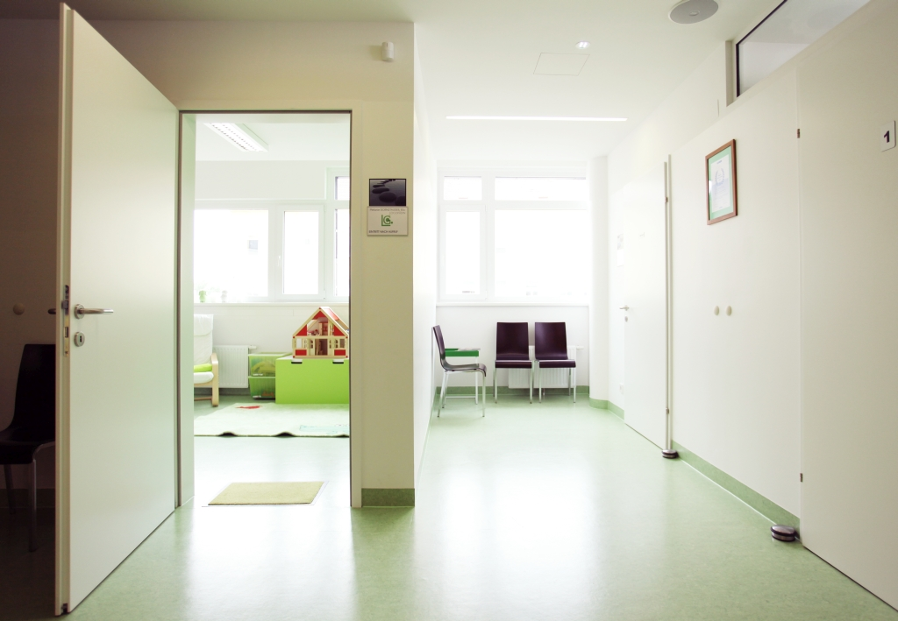
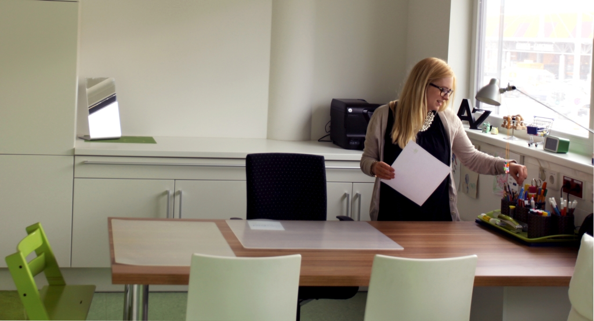

- 


- 


Die logopädische Praxis befindet sich im Gesundheitsdienstleistungszentrum MED 22 (Stadlau, 1220 Wien), in den Ordinationsräumlichkeiten von Hals-Nasen-Ohren-Arzt & Phoniater Dr. Michael Dialer (www.hno-dialer.at).
Das MED 22 wurde im Oktober 2013 eröffnet und ist sowohl mit den öffentlichen Verkehrsmitteln als auch mit dem Kfz sehr gut erreichbar (siehe Kontakt – Lageplan). Das moderne Gebäude gewährleistet einen barrierefreien Zugang für alle Patienten.
Die Praxis bietet viel Platz um den Anforderungen einer logopädischen Therapie gerecht zu werden.